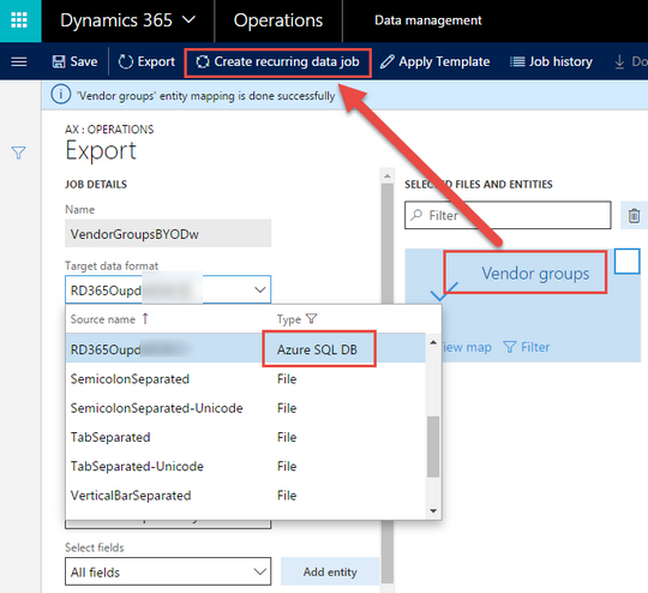

BLOG
 How-to: Bring your own data warehouse to Microsoft Dynamics 365 for Operations
How-to: Bring your own data warehouse to Microsoft Dynamics 365 for Operations
September 1, 2017| Real Dynamics Team
Many customers have an existing data warehouse where Microsoft Dynamics AX ERP data constitutes a fraction of the share and non-ERP data constitutes a larger share. In such situations re-architecting the whole data warehouse may be infeasible. Customers would need AX data in their own data warehouse, which is why Dynamics 365 for Operations supports the option to bring your own data warehouse (or BYODw - not yet an industry acronym, but it will be).
When would a D365 for Operations customer opt for BYODw, when the customer can leverage the entity store (AXDW) out of box for all reporting based on AX data? If they have their own data warehouse and need information from D365 Operations, then they need to choose BYODw.
Using D365 for Operations (AX), you can export data to an Azure SQL database and then pull the information from there to your own data warehouse.
Below are high-level steps to achieve this extraction of information from D365O into your own data warehouse.
First we would set up an Azure SQL server with an active subscription:

Then we would create a new Azure SQL Database. Note the connection details:
We can browse data in the in-browser SQL Database Query Editor (now in preview in the Azure Portal), and/or using the SQL Server Object Explorer in Visual Studio.
Next we open a Data management workspace in D365 for Operations:
Here we create a connection with the new Azure SQL DB. Provide all necessary details viz. Server, Initial Catalog, user id and password and click the Validate button.
NOTE: Continue with the next steps only if the validation is successful. If you encounter an error, then review your connection details, update, and try again.
Based on the Azure SQL DB setup, you can enable/disable clustered column store indexes.
Next, we click on Publish in the toolbar (see above) to publish the entity structure from D365O to Azure SQL DB.
In the Target entities list, we select one or many entities for publishing.
Before clicking on Publish, ensure that you enable change tracking either at primary table level on entity level:
Next we set up an export job to extract information from D365 for Operations. For this we would need to set up an export data project, select the entity to export, fields to export, export trigger and recurrence:
Ensure while exporting that the target data format is that of the connection to Azure SQL DB.
Note the Application ID while setting up recurrence as sometimes it gets flushed out and we need it to be enabled for the two cloud service to interact:
Once the recurring data job is setup and executed, one can verify through the job history the data and frequency of export:
After ensuring data has been successfully extracted from D365 for Operations, it is time to view the same in Azure SQL Database. The figure below illustrates one of my favorite ways of exploring data in Azure SQL DB using SQL Server Object Explorer in Visual Studio (2015 Professional):
For this you need to download an add-in from Azure/Microsoft, then create a new database connection by providing adequate connection and security details. Once the connection is established, the data from D365 for Operations can be browsed or otherwise used in your data warehouse.
If you have any question contact us on info@realdynamics.com
Recent post
-
What’s new in Microsoft Dynamics 365 for Operations, Part 2: Warehousing and mobile
August 1, 2017| Real Dynamics Team
-
What’s new in Project accounting and management in Microsoft Dynamics 365 for Operations
July 1, 2017| Real Dynamics Team
-
What’s new in Microsoft Dynamics 365 for Operations – Supply Chain
June 1, 2017| Real Dynamics Team
-
What's new in Microsoft Dynamics 365 for Operations - Financials, Part 3
May 1, 2017|Real Dynamics Team
-
What's new in Microsoft Dynamics 365 for Operations - Financials, Part 2
April 1, 2017| Real Dynamics Team
-
Microsoft Dynamics AX Company Split
March 3, 2017| Real Dynamics Team
-
What's new in Dynamics 365 for Operations (AX7) - Financials, Part 1
February 1, 2017| Real Dynamics Team
-
Budgeting Capabilities in New Microsoft Dynamics AX (Dynamics 365)
January 1, 2017| Real Dynamics Team